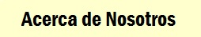
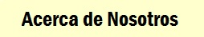
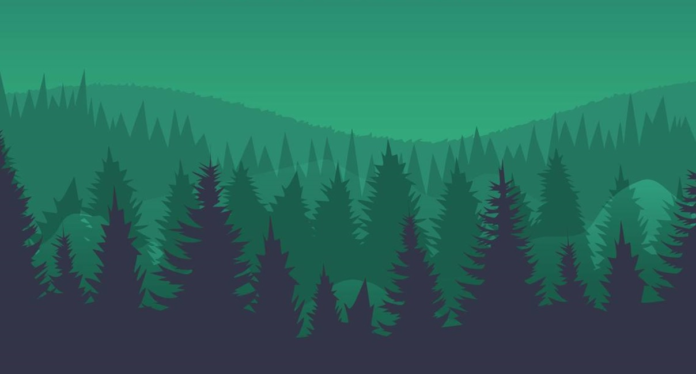

Deep Woods

Últimas Novedades |
| video |
Escucha la entrevista de los creadores de Deep Woods acerca de cómo fue
que se les ocurrió la idea para empezar a desarrollar este juego,
cuales
fueron sus experiencias al estar elaborando el juego,
conflictos o
problemas que ocurrieron y el labor que desempeño
cada uno de ellos como
equipo. |
|